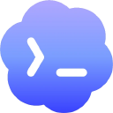

Have a thought? Say it right where you are.
Just unmute for everything.
The best interface for Claude Code and Codex. Talk to them from anywhere on your Mac.
works with  Claude Code
Claude Code
Claude Code
Codexpricing landing pagelanding page · resumed✓
Priya
Design's done. Are we still good for Tuesday?
Design's done. Are we still good for Tuesday?
Sam
QA found two blockers 😬
QA found two blockers 😬
Pricing launch — brief
▶
Onboarding teardown
› Mon · landing page
hero copy ✓ · nav ✓ · pricing section …
› next: the pricing section
picking up with full context…
Saved
Onboarding teardown ↗
“good onboarding example, for the redesign”
✎
✓
typedstartedsavedresumed